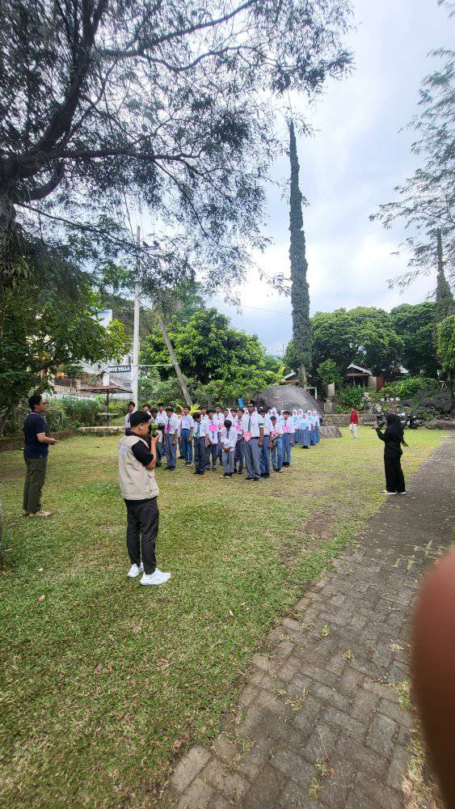
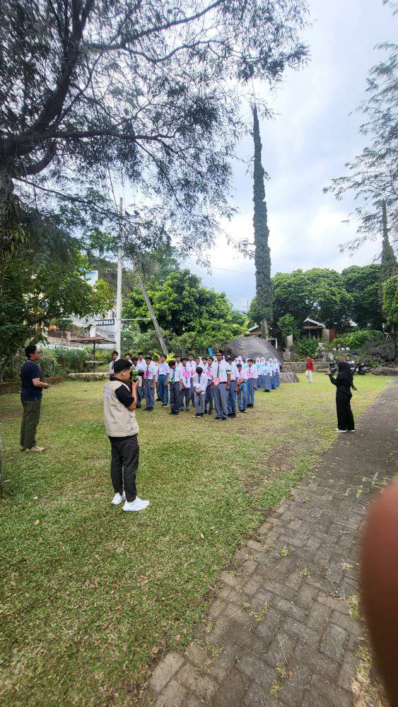

Kegiatan LDKS SMK Tanada Berlangsung dengan Sukses
12 September 2024
 

SMK Tanada sukses menggelar kegiatan Latihan Dasar Kepemimpinan
Siswa (LDKS) yang berlangsung pada 13-14 September 2024. Kegiatan
ini bertujuan untuk membentuk jiwa kepemimpinan, melatih tanggung
jawab, serta meningkatkan kedisiplinan para siswa.
LDKS tahun ini
diikuti oleh seluruh pengurus OSIS serta perwakilan dari setiap
kelas yang telah dipilih. Dengan berbagai kegiatan menarik seperti
outbound, diskusi kelompok, serta simulasi kepemimpinan, peserta
diajak untuk mengembangkan kemampuan kerjasama tim, berkomunikasi
dengan baik, dan menjadi pemimpin yang bertanggung jawab.
Kegiatan ini merupakan bagian dari upaya kami untuk mencetak siswa yang
tidak hanya berprestasi di bidang akademik, tetapi juga memiliki
jiwa kepemimpinan yang kuat," ujar Kepala Sekolah SMK Tanada.
Dengan adanya LDKS ini, diharapkan siswa SMK Tanada dapat menjadi
pemimpin masa depan yang berintegritas dan berkarakter.